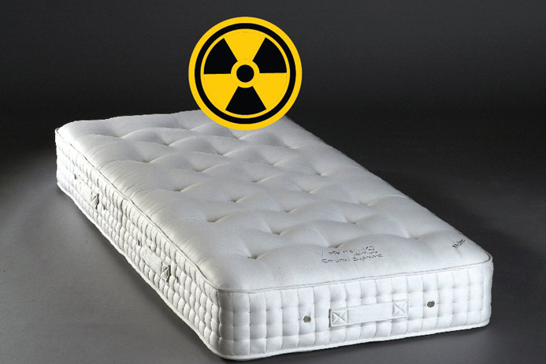

Some people say that negative ions are good for health. So, a company called Daejin put negative ion powder, which was made of monazite, to release negative ions. Instead of improving people's health, uranium and thorium inside the monazite alpha decayed, releasing radon. The radon caused many health problems. This incident was ended by the development of a cheap and fast radon detector, but since radon's phase is gas, the detector used continuous detection method. But sadly, this way cannot be applied on thorium and uranium, because they exist as a solid phase.
The shape and size of a radioactive halo depends on the element that consists the central mineral. Also, the halos seem to have some kind of law between the size and shape of the halo and the central mineral. So, if we research on the law that decides the size and shape of the halo, we can distinguish the kind of the mineral. Right now, we have to use EDS, or Energy Dispersive X-ray Spectroscopy to know the kind of mineral. This way needs expensive machines, so normal people can't use this way. But if we know the rule of the halos, normal people would be able to know the kind of mineral.